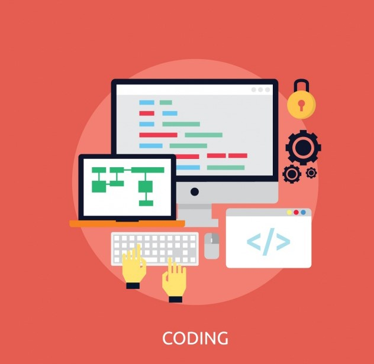

|
Diseño de interfaces | |
|---|---|---|
| 2ºDAW | Quienes Somos | Contacto |
| ESTE PROFESIONAL SERÁ CAPAZ DE... | Código del Ciclo |  |
|---|---|---|
| Desarrollar, implantar, y mantener aplicaciones web,
con independencia del modelo empleado y utilizando tecnologías específicas, garantizando el acceso a los datos de forma segura y cumpliendo los criterios de accesibilidad, usabilidad y calidad exigidas en los estándares establecidos. |
IFCS03 | |
| Duracion | ||
| 2000 horas, 2 cursos academicos, incluida la F.C.T | ||